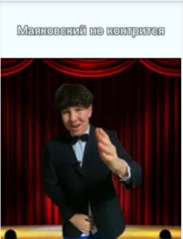

Давайте начнемо з того що маяковського тяжко законтрити,
но все ж таки є пару способів його законтрити
листай вниз🙂🙂
ЦЕ МОЖЕ БУТИ ДУЖЕ І ДУЖЕ ТЯЖКО
тому що Маяковський мастрер 4242 уровня підлавлювання
і із за цього може бути тяжко уникнути це все, но у нас є пару способів!!!
Це були всі способи як уникнути і підловити Маяковскага
Всім гарного дня і дякую за те що переглянули цю сторінку🙂